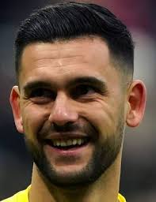
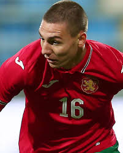
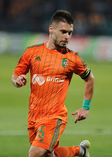
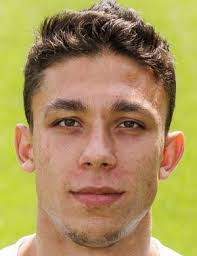
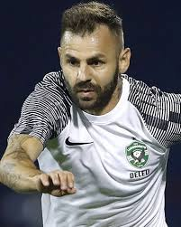
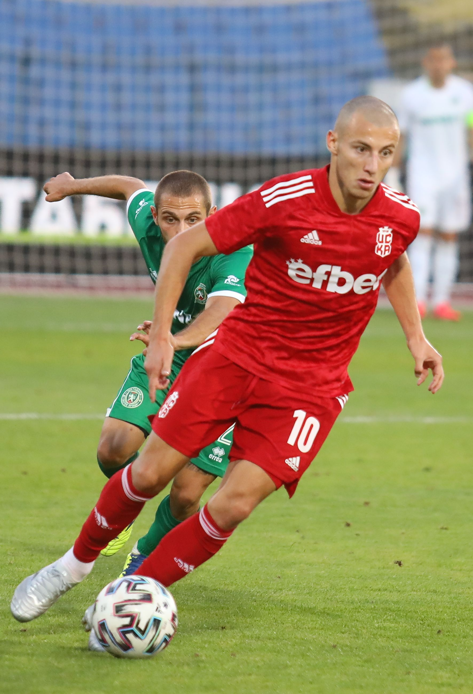

| Dimitar Mitov |
Portero |
28 |
Dimitar Mitov (n. 1997). Guardameta titular de la selección búlgara en 2025. |
 |
| Valentin Antov |
Defensa central |
24 |
Valentin Antov (n. 2000). Capitán joven, defensa del Monza (Italia), pieza clave en la zaga. |
 |
| Plamen Galabov |
Defensa central |
29 |
Plamen Galabov (n. 1996). Defensa con experiencia en la liga local y la selección nacional. |
 |
| Kristiyan Malinov |
Mediocampista |
31 |
Kristiyan Malinov (n. 1994). Volante de contención, habitual en las últimas convocatorias. |
 |
| Filip Krastev |
Mediocampista ofensivo |
23 |
Filip Krastev (n. 2001). Joven mediapunta convocado regularmente en 2025. |
 |
| Spas Delev |
Extremo |
36 |
Spas Delev (n. 1989). Extremo veterano, aportando experiencia al ataque búlgaro. |
 |
| Kiril Despodov |
Delantero / Capitán |
28 |
Kiril Despodov (n. 1997). Capitán y máxima figura ofensiva de la selección. |
 |
| Georgi Rusev |
Delantero |
26 |
Georgi Rusev (n. 1999). Atacante convocado para la delantera en 2025. |
 |